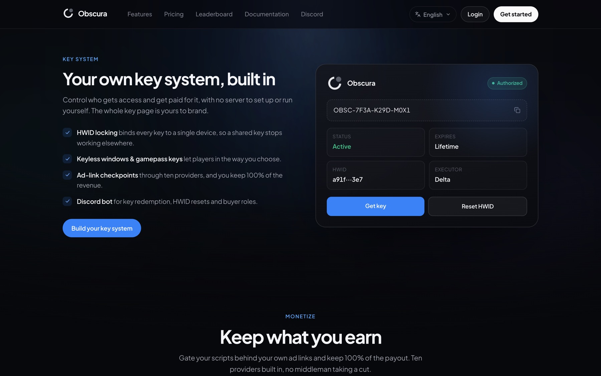
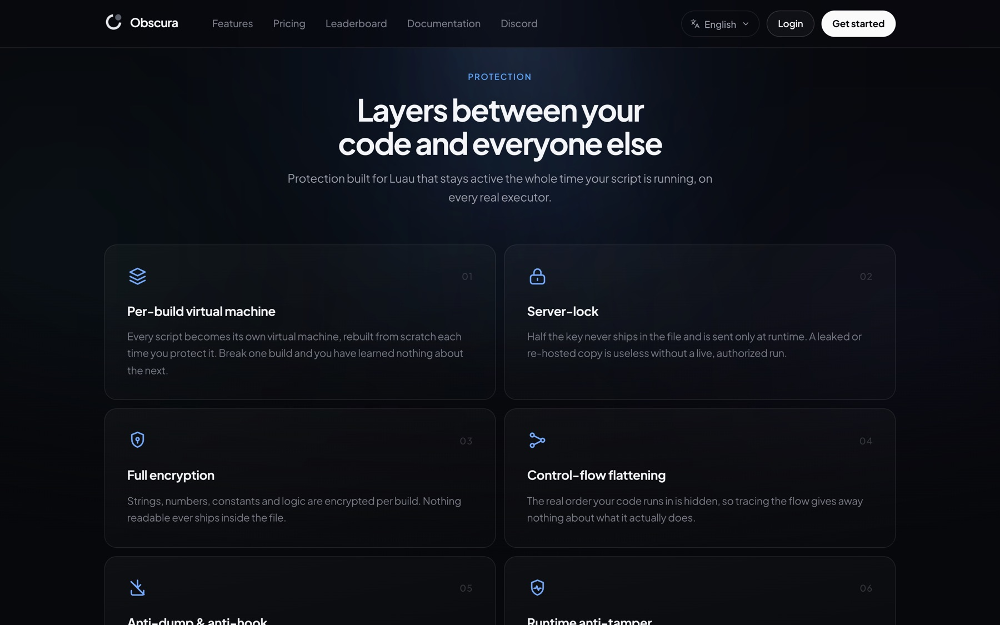
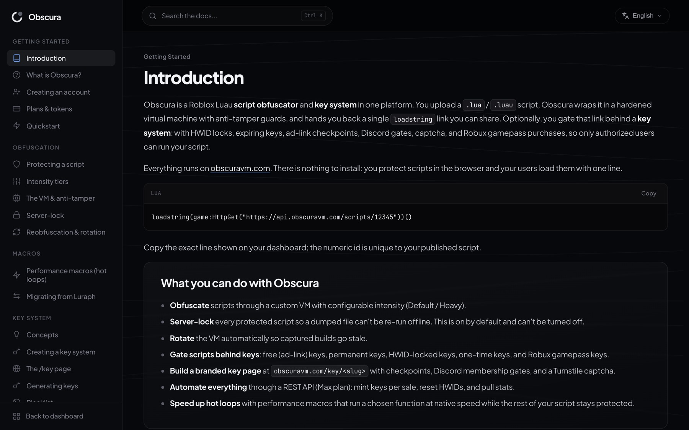
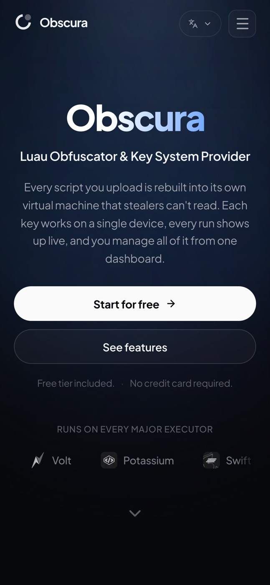
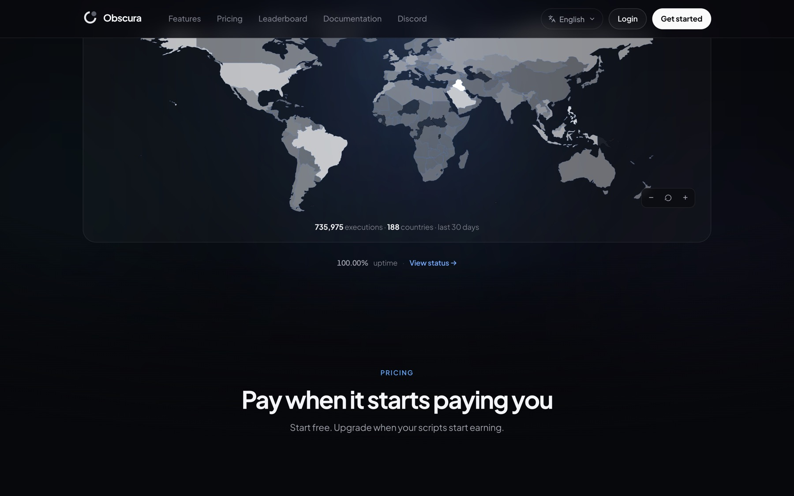

Obscura
A Luau obfuscator and key system for Roblox scripts. Every script is rebuilt into its own virtual machine, and creators decide who gets to run it.

01 / Overview
Stolen scripts,made worthless.
Roblox script creators sell their work, and it gets dumped, re-hosted and leaked. Obscura protects a script in a few seconds and hands back one loader line that runs on every major executor.
What ships can't be read, and thanks to server-lock a leaked copy does nothing offline. I built all of it on my own, from the virtual machine at the bottom to the dashboard and the website on top.
02 / Protection
Layers between the codeand everyone else.
Per-build virtual machine
Every script becomes its own virtual machine, rebuilt from scratch each time it's protected. Break one build and you've learned nothing about the next.
Server-lock
Half the key never ships in the file and only arrives at runtime. A leaked or re-hosted copy is useless without a live, authorized run.
Full encryption
Strings, numbers, constants and logic are encrypted per build. Nothing readable ships inside the file.
Control-flow flattening
The real order the code runs in is hidden, so tracing the flow gives nothing away.
Anti-dump and anti-hook
Dumpers, loadstring hooks and debug tracers only ever reach decoys and junk.
Runtime anti-tamper
The build checks itself while it runs. Change a single byte and it decodes to noise.
Invisible watermarking
Every build carries a hidden owner tag, so a leak traces straight back to whoever shared it.
Protected in seconds
A full script is protected in a few seconds, so shipping an update never means waiting.
03 / Key system
Access control,built in.
Creators decide who can run their script and get paid for it, with no server of their own to set up. The key page is theirs to brand.
- Keys locked to one device, so a shared key stops working
- Keyless windows and Robux gamepass keys
- Ad-link checkpoints across ten providers, creators keep 100%
- A Discord bot for redeeming keys, HWID resets and buyer roles
- Bans by HWID, IP or Roblox ID that hit every live session at once

04 / The product
One platform,not three tools.




05 / In numbers
Running, andbeing used.
From the live counters on obscuravm.com, 10 November 2026.
Up next
All work